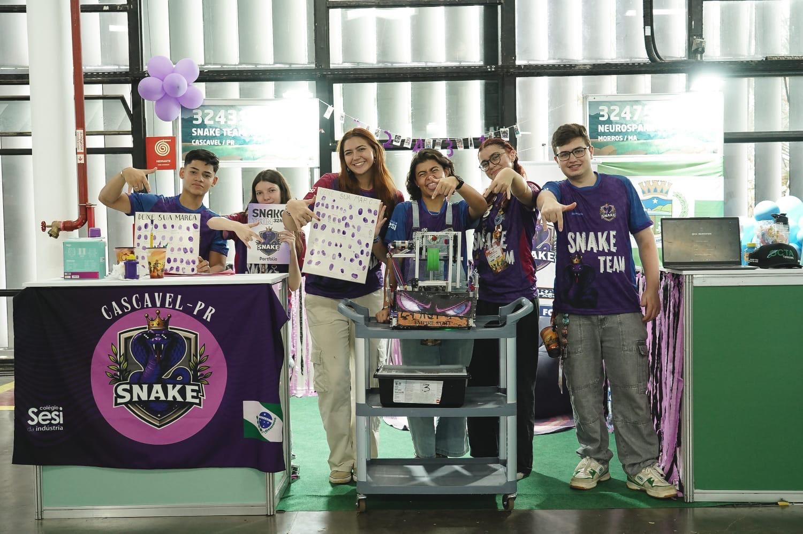
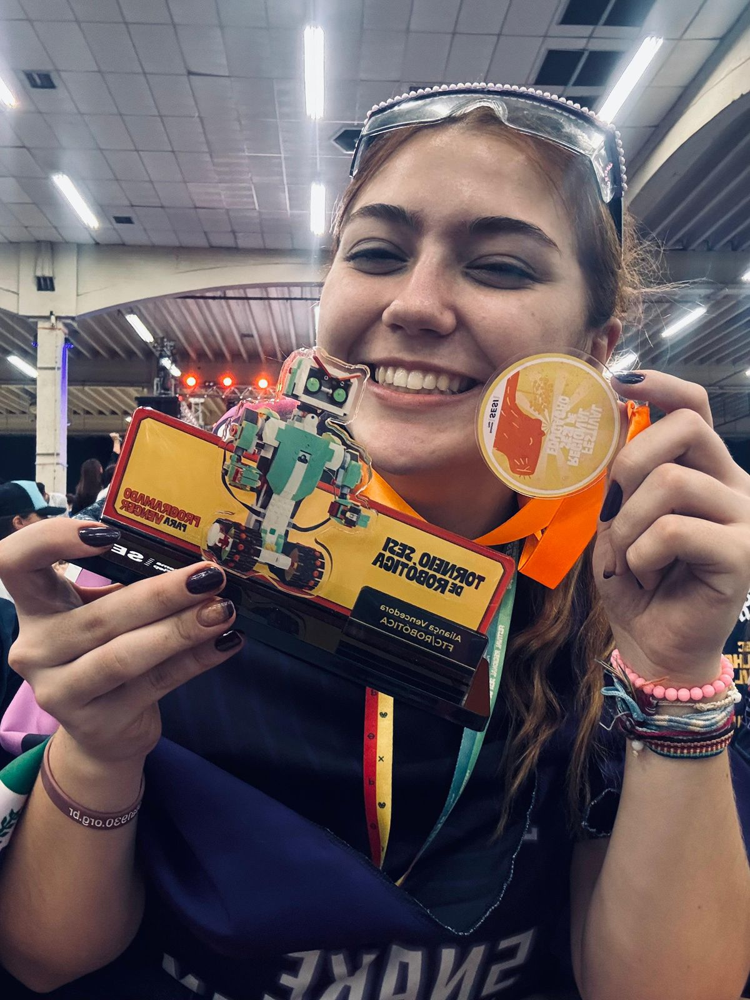
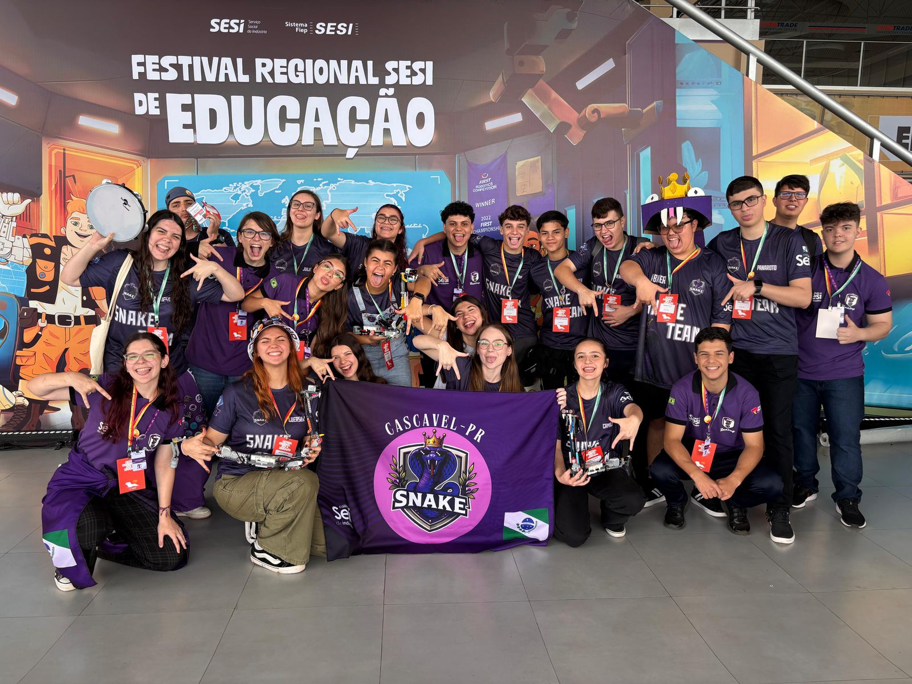
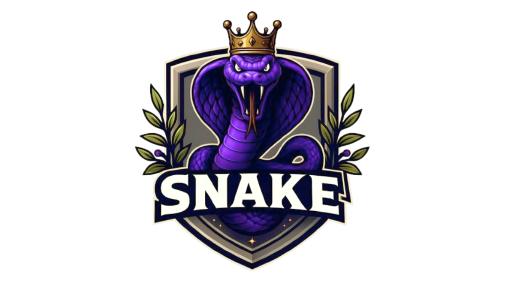

Snake Robotics Team
When I began at Snake Robotics Team, I thought I would just fit LEGO blocks. Of course, I was wrong. Being on a robotics team taught me how to build robots and code them. More than this, I’ve learned how to manage my team, which has made me understand how to deal with different people and situations.


During my robotics journey, I participated in two modalities: FIRST LEGO League and FIRST Tech Challenge. The LEGO one was the first. There, I built and programmed basic things while solving the table missions. In my first competition, my team won First Place in the Innovation Project.

The next year, I began at the FTC team. First, I was the leader of the Programming group, learning more advanced block programming and helping the younger members with the code. Then, I decided to help the Social group, writing portfolios and getting sponsors, which led me to the Team Leader responsibility. Dealing with different people, I needed to understand how each member of my team works; then, I could solve problems and improve the team’s organization.
